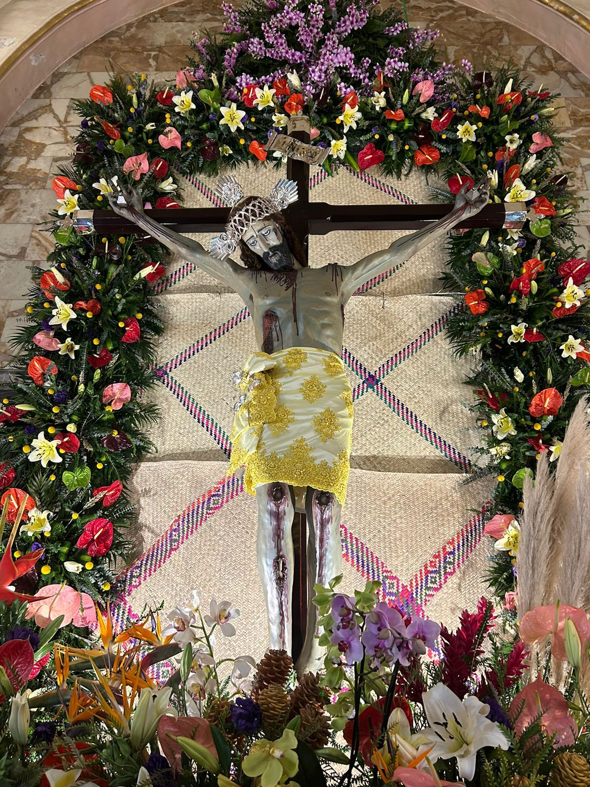
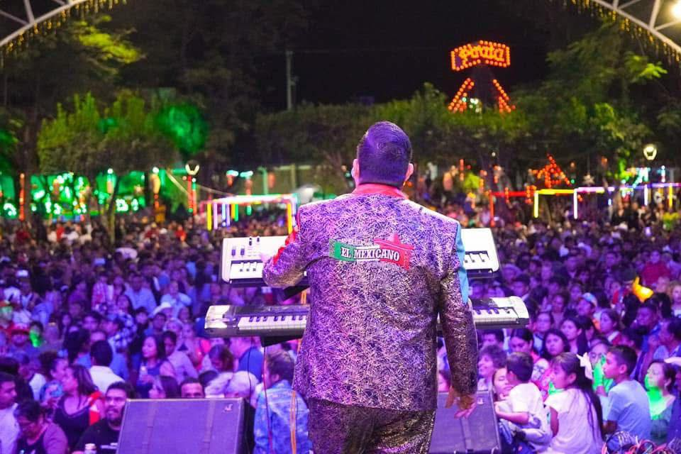

Durante la feria, se llevan a cabo diversas actividades religiosas, como misas, procesiones y novenarios, así como eventos culturales y recreativos que incluyen danzas tradicionales, desfiles de carros alegóricos, música en vivo, corridas de toros, bailes populares y una muestra de la gastronomía y artesanías locales.
 